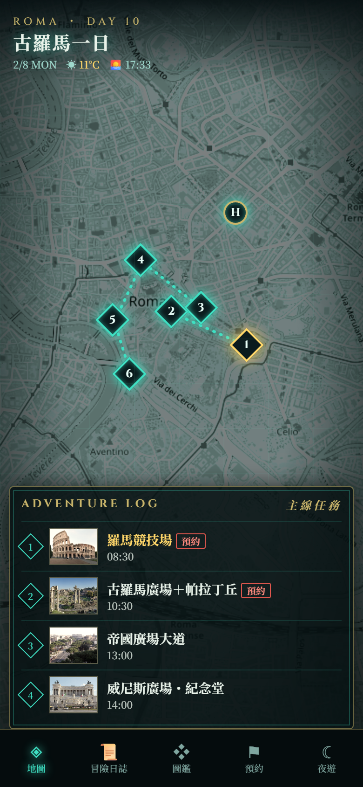
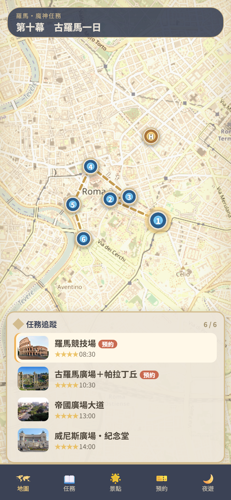
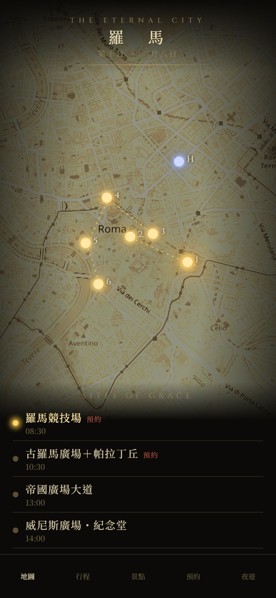
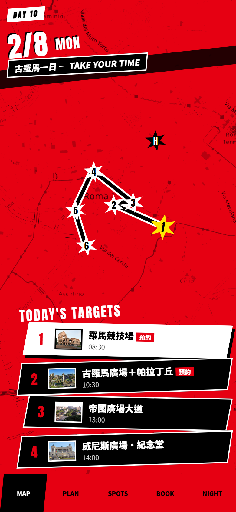
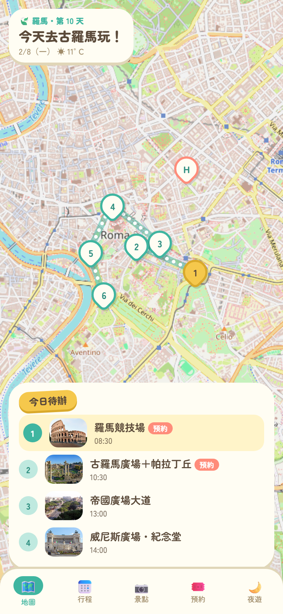

🎮 遊戲地圖風格 5 選 1
點圖可以開互動版（地圖能拖、能縮放）。

A 薩爾達 TOTK・普爾亞平板
深青綠＋金框，菱形任務標記發光，冒險日誌

B 原神・提瓦特地圖
羊皮紙暖色、傳送錨點、任務追蹤＋星等

C 艾爾登法環・賜福
黑金極簡、景點像賜福一樣發光、四周暗角

D 女神異聞錄 5・怪盜團
紅黑白高對比、斜切卡片、大日期轉場感

E 動物森友會・NookPhone
奶油色圓角、可愛泡泡、明亮配色